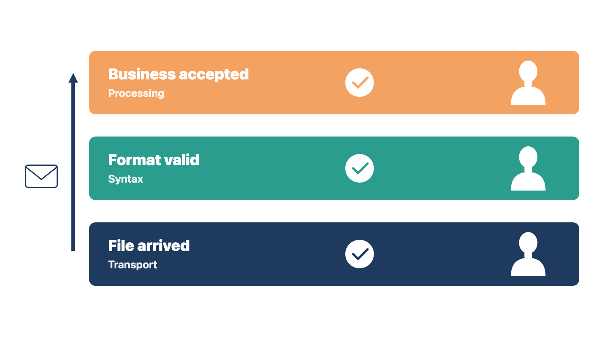
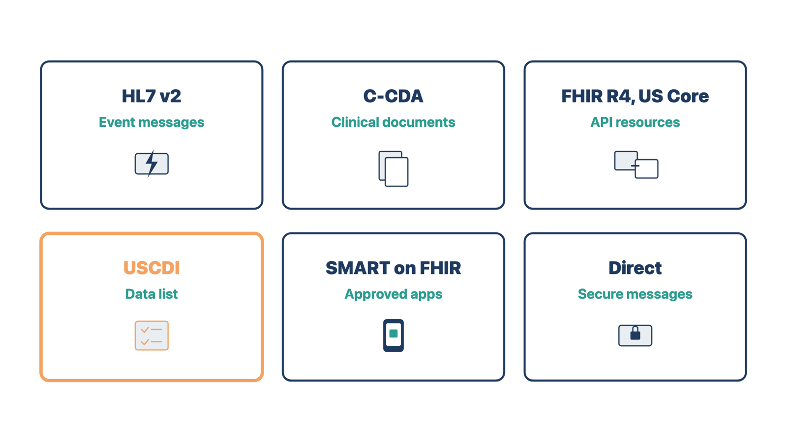

A message can arrive and still fail. If no one knows the difference, a missing lab result or claim stays missing until a patient or payer complains.
An acknowledgement is a reply that says what happened to an item. For each exchange, answer these questions:
Acknowledgements come in layers. A transport acknowledgement says a file arrived. A syntax acknowledgement says its format was valid. A business acknowledgement says the receiver accepted the content for processing. Each layer has its own meaning and owner.

Compare two cases. A lab interface returns "accepted" for every result, but two results file to the wrong patient. A claims file returns "accepted," but three claims inside it are later rejected. In both cases, the first "accepted" was only about delivery. Train and test the layers separately.
Check yourself
A connector test proves two systems can talk. Only an end-to-end test proves the clinic's work gets done, including on a bad day.
The implementation gate needs end-to-end business tests. Connector tests alone are not enough. Include these scenarios:
For each test, record the source result, transport result, destination result, and business result. Also record the acknowledgement, timing, and evidence. Test both directions when information comes back.
Synthetic data is made-up data built for testing. Never use real patient records in a test environment. Use synthetic data and the client's approved access and security process. In this course, all practice work uses the casebook or the practice case.
Rule: A test passes only when the business result is correct, not when the message moves.
Check yourself
Two products can both "support HL7" and still not work together. Knowing the standard and its version lets you ask the right question before testing fails.
Interoperability means systems can exchange health information and use what they receive. You do not need to build interfaces. You need to know what each standard is for, ask which one each exchange uses, and record its version.
HL7 Version 2 (v2). HL7 (Health Level Seven) is the group that publishes these standards. HL7 v2 is an event-driven messaging standard. A registration, an order, or a finished lab result triggers a message. Common message types are ADT (admit, discharge, transfer, and registration), orders, and ORU results. HL7 v2 is still common for registration, lab, and scheduling interfaces. Many v2 interfaces are customized, so two "HL7 interfaces" may not match. Ask for the interface specification.
C-CDA. The Consolidated Clinical Document Architecture is a library of templates for whole clinical documents. Examples are the Continuity of Care Document (CCD), the referral note, and the discharge summary. A C-CDA is a snapshot sent at one point in time, often when a patient moves between providers. The current HL7 release is 5.0.0.
HL7 FHIR R4 and US Core. FHIR (Fast Healthcare Interoperability Resources) exchanges data through web APIs. An API (application programming interface) is a defined way for one program to request data from another. FHIR sends small units called resources, such as a patient, a medication, or a lab result. Release 4 (R4) is the FHIR version used in current US certification. US Core is the HL7 guide that sets the minimum US rules on top of R4.
USCDI. The United States Core Data for Interoperability is a named list of data types, such as allergies, medications, problems, and lab results. Certified health IT must be able to exchange it. USCDI version 3 became the required baseline for certification on January 1, 2026. Developers may adopt newer versions early through a federal process called the Standards Version Advancement Process (SVAP). USCDI v6 was approved for that process in 2026. So "supports USCDI" means little without a version number.
SMART on FHIR. SMART App Launch is an HL7 guide built on OAuth 2.0, a common standard for granting access. It lets an approved app connect to an EHR's FHIR API with limited permissions called scopes. An app can open inside the EHR or on its own, such as a patient's phone app.
Direct secure messaging. Direct works like email, but each message is encrypted and sent only between known, trusted recipients. Clinics use it to send referrals, results, and care summaries, often as a C-CDA. Each user or location has a Direct address.

Rule: For each clinical exchange, write down the standard and its version.
Check yourself
National rules shape how an EHR shares information. A wrong setting can break a federal rule, so you must know who decides, even though you never decide.
Rules change often. Confirm current versions at the start of each project.
ONC Health IT Certification Program. The Office of the National Coordinator for Health Information Technology (ONC) runs this voluntary federal program. Approved bodies test products against published criteria. Certified products appear on the Certified Health IT Product List (CHPL). Programs run by the Centers for Medicare & Medicaid Services (CMS) encourage or require certified technology. Ask the vendor for the product's CHPL listing and the criteria and versions it covers. Then check the listing yourself. Certification shows the product can do certain things. It does not prove the client's setup is correct.
The HTI-1 rule. ONC's HTI-1 final rule took effect March 11, 2024. It set USCDI v3 as the certification baseline from January 1, 2026. It added transparency rules for decision support, covered in Module 10. It also revised the information-blocking rules.
Information blocking. The 21st Century Cures Act bans information blocking. This is a practice likely to interfere with access to, exchange of, or use of electronic health information (EHI). A practice is allowed when the law requires it or an exception applies. The rule covers health care providers, developers of certified health IT, and health information networks. Exceptions include preventing harm, privacy, security, infeasibility, and system performance. Providers found to have blocked information can face penalties. Setup choices can raise the question. Examples are delaying results in the patient portal, turning off an export, or refusing an app connection.
TEFCA and QHINs. The Trusted Exchange Framework and Common Agreement (TEFCA) is a nationwide framework for sharing records. Qualified Health Information Networks (QHINs) are the networks that connect to each other under it. Exchange purposes include treatment, payment, operations, public health, benefits decisions, and patient access. A clinic usually joins through its vendor or a network, which means signing agreements.
Payer interoperability rules. CMS rule CMS-0057-F requires some payers, such as Medicare Advantage and Medicaid plans, to build data-sharing and prior authorization APIs. Operational requirements began January 1, 2026. Most API requirements apply from January 1, 2027. The clinic is not the regulated party, but its prior authorization workflow may change.
Who decides:
Record each exchange in an interoperability source register. This is a table with one row per exchange.
Rule: You record, test, and route each sharing question; the client's named leaders decide it.
Compare two cases. A practice manager asks you to hold lab results from the portal for seven days. A physician asks you to turn off the chart export because "patients don't need it." Both requests could be information blocking. In both cases you record the request and route it to the privacy or compliance authority before you change anything.
Check yourself